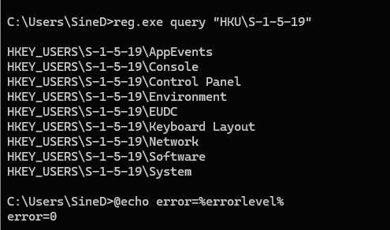
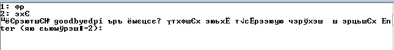
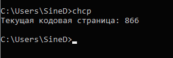
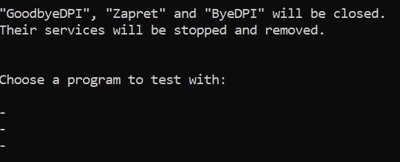

Описание:
Этот скрипт - конструктор файла .cmd для запуска goodbyedpi с нужными параметрами (служба/консоль;c блэклистом/без;с днс редиректом/без; плюс строка запуска). Позволяет переключаться между конфигурациями из successfulConfigurations.txt. К примеру, можно быстро проверить несколько конфигураций, полученных скриптом GoodCheck (который автоматически ищет рабочие конфигурации для ютуба и др. сайтов)
Как пользоваться в связке с GoodCheck:
- Скачать и распаковать последнюю версию goodbyedpi https://github.com/ValdikSS/GoodbyeDPI/releases/download/0.2.3rc3/goodbyedpi-0.2.3rc3-2.zip
- Распаковать архив со скриптом GoodCheck https://ntc.party/t/goodcheck-блокчек-скрипт-для-goodbyedpi-zapret-byedpi/ в папку goodbyedpi-0.2.3rc3-2 (не в отдельный каталог, а прям туда же, где все остальные файлы cmd)
- Открыть в текстовом редакторе (лучше всего notepad++) файл
Config.cmd. Найти там строку
set "_outputMostSuccessfulStrategiesSeparately="
Поменять на
set "_outputMostSuccessfulStrategiesSeparately=true"
Чуть ниже будет строка
set "_mostSuccessfulStrategiesFile="
Поменять на
set "_mostSuccessfulStrategiesFile=successfulConfigurations.txt"
Сохранить.
- Запустить
Start.cmd, ответить на вопросы скрипта, дождаться окончания его работы.
Скрипт сохранит найденные конфигурации в файлsuccessfulConfigurations.txt(который должен быть в папке goodbyedpi-0.2.3rc3-2 и не должен быть пустым).
Примерное содержимое successfulConfigurations.txt:
flibusta:-f 2 -e 2 --reverse-frag
youtube:-f 2 -e 2 --fake-gen 2 --fake-with-sni www.google.com --frag-by-sni -q
-f 2 -e 2 --frag-by-sni
- Файл скрипта SelectConfigurationRu866.cmd или же SelectConfigurationEn.cmd (для тех, у кого на русском кракозябры) нужно положить рядом с остальными файлами *.cmd .
Запустить скрипт, выбрать нужные параметры (можно просто жать везде Enter) .
Скрипт выведет на экран список конфигурций из файла successfulConfigurations.txt. Запишет выбранную конфигурацию в файл с названиемConfiguration[номер_конфигурации][asService].cmd. Запустит goodbyedpi и снова выведет список конфигураций.
Так можно проверить работу ютуба (др. сайтов) для каждой конфигурации.
Допустим, вы нашли подходящую конфигурацию. Тогда запомните ее номер, и пользуйтесь файлом Configuration[номер_вашей_конфигурации][asService].cmd.
Возможно, сразу несколько конфигураций оказались рабочими для разных сайтов, и вы решили их оставить, чтобы быстро между ними переключаться. Тогда можно сохранить в successfulConfigurations.txt лишь рабочие конфигурации и добавить для них название на английском и с двоеточнием (к примеру, сайт, который разблокирует конфигурация). Если нет названия, то ничего не писать.
К примеру:
flibusta:-f 2 -e 2 --reverse-frag
youtube:-f 2 -e 2 --fake-gen 2 --fake-with-sni www.google.com --frag-by-sni -q
-f 2 -e 2 --frag-by-sni
Прикольно, а чего он в юниксовской кодировке? Проблем не будет от этого?
Да и сам этот CMD не мешало бы от админа запускать (или пусть он сам запрашивает права), ибо иначе он не может убить ни службу виндиверта, ни гудбай - тупо несколько копий проги запускается и все )
Странно, у меня консоль работает без админских прав, только для службы требуется. Ладно, попробую полечить по фотографии) А насчет юникода - как-то по привычке уже. Сделаю вариант на кириллице.
А нельзя как-то прикрутить к конфигурациям описание? Типа:
[Ютуб] -5 --fake-resend 2 --fake-gen 12 --frag-by-sni -q
[Хэдэрезка] -5 --fake-resend 2 --fake-gen 9 --fake-from-hex блабла --frag-by-sni -q
и чтобы это было в окне скрипта видно
Можно в принципе, попробую.
Если в винде профиль от админа и без пароля, то необязательно запускать скрипты от админа, там и так по умолчанию. На всякий случай можно в начало скрипта добавить…
Спойлер
whoami /groups | find “S-1-16-12288” > nul
if %errorlevel% != 0 (
exit
)
… но это уже параноя.
Win 11 Pro. Профиль из группы Администраторы. Пароля нет. Скрипт работает так, как я написал - без запуска от админа не может убить процесс GDPI и службу windivert-а остановить тоже не может.
Спойлер
Проверьте плс, как работает SelectConfigurationV2.cmd (4,1 КБ) ? Чуть позже выложу с описанием конфигураций
Все так же, ничего не изменилось
У меня к сожалению нет win11 , чтоб проверить. Есть лишь 10-ка - на ней все ок. А что у вас будет в командной строке (не от админа) , если последовательно ввести команды?
reg.exe query "HKU\S-1-5-19"
@echo error=%errorlevel%
Вроде, проблем нет
Спойлер

Видимо, не работает сама :RunAsAdmin или работает не так
Ааа, вон оно что! Значит, и этот метод не работает для всех. Засада!)
А если разделить? У меня отлично это работает
if not "%1"=="am_admin" (powershell start -verb runas '%0' am_admin & exit /b)
reg query проверяет, если ли админские права, и запускает от админа, если нет. Правда, это не работает, как оказалось) А в вашем коде в любом случае запускает от админа, получается, так?
Получается да - сразу запрашивает права и поехало дальше по содержимому CMD
Ок, попробую спасибо
Все замечательно убивается, w10 ltsc
У тебя какие-то проблемы с делегацией прав. Так быть не должно. Ты когда запускаешь через “Выполнить” cmd то консоль уже от админа запускается. И когда активируешь любой скрипт.
Возможно, на win11 просто по-другому права настроены? На 10-ке у меня тоже все ок.
Да с какой хоть стати? ) Запускается с обычными правами. Это у тебя как раз проблемы с выдачей лишних прав
Спойлер
Неправильная делегация прав. Админ на то и админ, чтобы из его учетки запускалось всё от админа. Иначе смысла в ней не будет, с таким же успехом можно запускать из под юзерской.
У меня с правами всё отлично, я винду настраиваю уже больше 20 лет, по дефолту именно так и должно быть как я описал, начиная с win2k.
Не думаю. Хотя, если это сборка, или не выключен UAC, то может быть что-то намутили. По крайней мере я не встречал такого, чтобы по дефолту все операции в админской учетке были без админа.
Ну, началось ) Меряние пиписьками, кто дольше винду настраивает ) Никогда cmd с админскими не запускался, кроме как через Командная строка (Администратор). Не бывает вечных проблем с делегацией на всех виндах, начиная с 7
Проверьте плс SelectConfiguration4win11.cmd (3,9 КБ)
Так работает
Я без понятия, что у тебя за винда, но с моей точки зрения такое поведение учетки странное.
У меня все скрипты всегда от админа запускаются. Я ничего в учетке не менял, винда с msdn, поставлена штатно, даже ключ имеется. Я тот же goodbyedpi запускаю/устанавливаю как службу просто дважды клацнув, и никаких ошибок с правами не вылазило, всё закрывается/убивается/удаляется.
Ура! Спасибо
Такое поведение как раз нормальное. Иначе бы не было указаний запускать что-то там от админа, раз все и так запускается по умолчанию от него, то нафига?
У меня 2 учетки. Под администратором все, как у manwithbox. Т.е. не нужно от админа запускать, оно само. Вторая - под пользователем - все как у вас, т.е. нужно запускать от админа. Вроде все логично.
Это общее для всех учеток меню. Оно просто дублируется, чтобы не конфигить каждый тип учетки. Это винда 
Все права делегируются групповыми политиками.
Вот пример, правильная админская учетка. Запуск командной строки.
Вот так это должно работать. Если я сейчас переключусь в пользовательскую, то cmd будет запускаться просто.
Так мы и не говорим про учетку Администратор, мы говорим про учетку Имя_юзера входящую в группу Администраторы - это, как-бы разные вещи
Так бы сразу и сказал, что у тебя юзерская учетка. Вот она с правами админа как раз не умеет запускать всё подряд, и никак её не настроишь.
А про это надо отдельно говорить? 99,9% пользователей винды под такой учеткой
Наоборот, 99% юзеров как раз под админской. Иначе не было бы проблем с порнобаннерами на хр. Я очень редко встречал нормальное распределение прав. А через мои руки прошло очень много разных систем.
А с цветом консольки ты это хорошо придумал 
Да ну, как по мне так отвратно, сразу эту команду удалил
И запрос прав при каждой смене конфига - тоже не дело (быстро заколебет пользователя). Лучше сделать 1 раз при запуске самого SelectConfiguration.cmd
У меня просто глаза от черного фона устают почему-то… А у некоторых наоборот))
p.s. Кстати, а когда блокчек на питоне ждать? Или уже забил?)
Так а смысл, если Ori уже сделал то же самое? Или предлагаешь его просто переписать на питон? Тот оригинальный блокчек, кстати, слишком мудреный, можно было сделать проще (как раз Ori сделал). Его фикс уже просто бесполезен в текущих условиях. Я думаю, собрать уже имеющиеся скрипты и сделать комбайн с гуи, где, начиная от пресетов, до гудчека, можно будет всё сразу делать.
Кстати, кодировку файла пофиксил.
SelectConfiguration4win11.cmd (3,9 КБ)
На ХР вообще такого понятия как “запустить от админа” не было. Кстати, прямо как у тебя сейчас 
Хех, а сам SelectConfiguration.cmd ничего и не запускает) Он сохраняет все в ConfigurationXXX.cmd, и его уже запускает. От админа. Раньше была проверка, теперь ее нет. Зато есть пауза (на всякий случай, чтоб не уйти в бесконечный цикл замозагрузки батника, а то еще подумают, что вирус какой, лол)
Можно переделать, конечно. Но тогда сам ConfigurationXXX.cmd будет без админских прав.
Там можно было редачить свойства бинарника и там ставить запуск от админа. Это уже в висте вынесли для удобства в меню.
У меня наоборот эта кривая)) Видимо, зависит от кодировки самой винды. Надо подумать…
Да, отличная идея
Пауза это тухлый вариант. Добавляй проверку по процессу.
Всегда, когда что-то проверяешь, цепляйся к чему-либо, к какому-нибудь процессу/файлу. Никогда не оставляй таймауты, потому что процессорное время у всех разное.
А разве запущенный от админа CMD не запускает из себя все другие CMD тоже от админа? По-моему - запускает.
CP-1251. В винде только так. А ты создал в OEM 866.
Правильно и сделал. У него там кириллица. На 1251 будут кракозябры вместо русского языка
У меня с 1251 отбражается так:

Имхо, это зависит от кодовой страницы по умолчанию. На win7rus это 866 (chcp в командной строке)
Да и не на win 7 тоже

1251 как раз для кириллицы. Это же винда. Даже в веб-приложениях использовали и используют, так как остальные чарсеты могут быть несовместимы.
А 866 это досовский атавизм.
Вот кстати еще раз закидываю, добавил чарсет.
SelectConfiguration4win11.cmd (3,9 КБ)
Проверил - отлично запускает. И нет кучи пугающих окошек при запросе прав перед перезапуском конфига
Те же самые кракозябры) У тебя винда не eng случайно?
Потому что ты сохранил файл в другой кодировке. Сохрани в 1251. Вон я кинул сохраненный еще раз.
Про вин7 не помню про чарсет, но тоже все гуд.
Подтверждаю, те же самые кракозябры. Файл пересохранил перед этим в 1251
А, блин, при пересохранении кодировка сломалась ((
Нет, русская винда.
Никогда не было проблем с кодировками батников.
Что вы там с системами делаете? 
Или это форум ломает?
Сохраняйте нотепадом, он правильно всё делает.
Ноутпадом и делаю. И твой готовый вариант тоже не прокатывает. Не все так просто) Приходилось раньше тестировать на большом числе машин, где-то были кракозябры, где-то нет. Есть хакерский способ это поправить через реестр, но потом будут претензии)
Поэтому писать скрипты в нативной виндовой среде с поддержкой русского слишком геморройно. Нужно писать софт на языке программирования, там можно контролировать кодировку.
Кстати мысль, напиши проверку по системе и активируй разные кодировки.
Согласен, при использовании варианта с 1251 батник полностью перестал перезапускать GDPI но русский остался ))
А не, отбой, дело в чем-то другом
Теперь вообще перестал запускать конфиги батник. Наши винды прокляли! 
А в том и засада, что на лету не меняется кодировка. А с кодировкой oem866 у тебя кракозябры что ли? Тогда точно верну инглишь)
А зачем на лету? Перед запуском скрипта.
Спойлер
for /f "tokens=4-5 delims=. " %%i in (‘ver’) do set VERSION=%%i.%%j
if “%version%” == “10.0” chcp 1251
if “%version%” == “6.3” chcp 1251
if “%version%” == “6.2” chcp 1251
if “%version%” == “6.1” chcp 866
if “%version%” == “6.0” chcp 866
А что это даст, если к примеру батник сохраненный в кодировке 1251
chcp 866
@echo Привет
chcp 1251
@echo Привет
pause
Выводит кракозябры при любой кодировке? Ладно, мне кажется, мы тут уже слишком увлеклись этими кракозябрами))
Внесу еще свой ответ по поводу.
оффтоп
Тоже всю жизнь что на семерке, что на десятке: дефолтная учетка, “администратор”, просто запуск той же командной строки не происходит сразу от админа, только через опцию “запустить от имени администратора”, причем второе всегда сопровождается UAC запросом.
Дистрибутивы “чистые”, с msdn и все такое. Поэтому присоединяюсь к стороне KDS’а)
чуть оффтоп:
сможешь проводник с правами админа без дополнительных команд запустить? (имеется ввиду под админской учеткой)
Работать под админской (Администратор - Administrator) учеткой в винде вообще опасно, это еще со времен сборок Зверя в которой так и было знают все, кто разбирается. Стандартная работа в винде - работа под другой учеткой, но из группы Администраторы. И она всегда требовала админских прав через UAC-запрос. У Коробкина он тупо отключен, скорее всего, вот все сразу с наивысшими правами и запускается.
Хотя нет, тут что-то другое - если UAC отключить, то все равно cmd от админа сама по себе не запускается.
Я имел ввиду всё пользовательское. То, что юзер запускает. Системные службы это отдельная тема.
Слушай, а ты вот тут ничего не менял?
Спойлер
Ну да, это оно и есть, поменял на Отключен (где логика хз) ребутнулся и все сразу стало как у тебя, cmd сразу админская запускается.
Неее, не угадал 
Ну включи, хоть посмотришь как нормальная винда как у всех работает, хоть раз в жизни 
Так это и есть нормальная винда. W10 ltsc 21h2. Остальные редакции это перегруженное хламом гуано.
Сейчас перечитал свои твики, они у меня в основном для выпиливания телеметрии, ничего такого там нет.
В общем, непонятно. У меня и на виртуалке еще 10 стоит для экспериментов, там то же самое. Когда я юзал w10pro было то же самое, но я не юзаю pro уже года четыре.
Может это в 11 что-то намутили, я эту систему глубоко не копал.
Ну, это мы поймем если еще кто с 10 отпишется и покажет что там у него ) Но это уже оффтоп, в принципе мы выяснили, что у тебя UAC отключен более чем полностью. А как это вышло - тебе виднее
А вот это вполне возможно, я УАК выпиливаю еще с висты, это жутко неудобная вещь, которая ничего не делает, но в системе висит и жрет ресурсы.
В общем, не суть. Разговор-то изначально был про запуск скрипта от админа 
Тема про переключение конфигов gdpi плавно превратилась в обсуждение админских прав на винде, лол
@KDS Мод специально для вас) SelectConfigurationRu866.cmd (4,3 КБ)
Название конфигов нужно задавать так:
youtube:-e1 ....
-5 -e1
twitter:-9 -e1....
Т.е. на английском и с двоеточнием. Если нет названия, то ничего не писать
Спс, сейчас проверю
Отлично работает. Теперь бы еще скрыть окно второго батника - и будет вообще хорошо
Второго - это какого? gdpi что ли?
Это которого с выбранной конфигурацией. Когда выбираешь конфигурацию и нажимаешь Enter - появляется 2-е окно и запрашивает права админа. И еще в нем написано много страшного )
Это не мое, честное слово)) Мое должно молча закрываться. Можете показать это страшное окошко?
Вот

{kind=link}
{kind=link}
{kind=link}
{kind=link}
{kind=link}
{kind=link}
{kind=link}
Ааа, понятно. Это опять к вопросу о правах) Может, тогда и правда лучше убрать автоповышение прав и запускать от админа сам батник?
Поменял
@echo if "%%~1"=="" ^(
@echo mshta "vbscript:CreateObject("Shell.Application").ShellExecute("%%~fs0", "1", "", "runas", 1) & Close()"
@echo exit /b
на
@echo if "%%~1"=="" ^(
@echo mshta "vbscript:CreateObject("Shell.Application").ShellExecute("%%~fs0", "1", "", "runas", 1) & Close()"
@echo cls
@echo exit /b
Теперь страшного почти не видно )
Ну и добавил /MIN после start - стало покрасивее, GDPI запускается сразу свернутым
И режим выбора блэклистов на 3 по умолчанию поменял, один фиг он у всех основной
Или из-за этого страшного не видно, я запутался уже (
start /MIN "" "%comspec%" /c "!cmdFile!"
 И тут до меня дошло, что в вашем случае мой скрипт надевает штаны через голову))
И тут до меня дошло, что в вашем случае мой скрипт надевает штаны через голову))
Изначально то он задумывался как конструктор, с помощью которого можно построить .cmd с нужным набором параметров (служба/консоль;c блэклистом/без;с днс редиректом/без и т.д.) Т.е. главное - это конечный cmd, для дальнейшего использования. А вам он вообще не нужен) Можно запускать gdpi прям из основного батника и все. И настройки остальные все лишние.
В общем, вот что получилось в итоге
SelectConfigurationRu866.cmd (4,3 КБ)
Лишнее на экран не лезет, тихо-мирно переключает стратегии. А как нужная найдется - там уж и созданным батником можно пользоваться
Ну это костыль конечно, но рабочий) А может лучше как службу запускать? Тогда еще меньше окошек будет
Не знаю, в моем сознании использование GDPI как службы отсутствует как класс ) Я хочу все видеть и контролировать, когда надо остановить, когда надо - запустить. Не лазая никуда дальше панели задач с закрепленным значком. Останов службы виндиверта перед запуском у меня прямо в CMD прописан, как и запрос админских прав перед этим.
Ясно) У меня похожий подход. Но вот последнее время показалось удобнее пользоваться opera proxy как службой (чтоб лишних окошек не было и легко переключаться между локациями) С gdpi тоже в принципе удобно.
{kind=link}
и что дальше тут нажать надо ?
{kind=link}
Нажать ничего, надо рядом со скриптом положить файл SuccessfulConfigurations.txt
О чем в шапке, кстати, черным по-руссои написано
Не помогает, ровно такая же беда и у меня на Win10 21H2 iOT LTSC билде
{kind=link}
А что у вас в этм файле, покажите
думал, что скрипт перебирает и выдает рабочие параметры под моего оператора.
а это просто выбор из готовых.
моя ошибка, что не понял правильно
Перебирает этот, а тут для другого.
Эта ошибка выходит, когда файл successfulConfigurations.txt есть, но он пустой.
{kind=link}
Вижу такую вот кашу у себя, винда 11.
Попробуйте скрипт на инглише из шапки SelectConfigurationEn.cmd https://ntc.party/uploads/short-url/cqetY3Rbc1dXGe2cXsAq0MksC1L.cmd
А этот сработал нормально, спасибо. Живу дальше. В выходные без ютуба вообще никак.
Попробовал скрипт этот, но на третьем ответе всё остановилось с ошибкой (Win11):
{kind=link}
Ну так заполните этот файл вашими 2-мя, 3-мя или сколько вам там разных конфигураций нужно. Как это все должно выглядеть - в шапке написано
А до этого вы запускали goodcheck?
А, точно, прошу прощения. Перепутал, думал, сначала нужно скрипт запустить, он создаст некие конфиги, а потом уже GoodCheck выберет среди них наилучший.
Ладно, ОК, спасибо, пойду GoodCheck помучаю.
Наверно, не очень понятно написано, поправлю
Здравствуйте)
Пытаюсь запустить goodcheck и cmd пустое

путь до программы значит неправильно указан.
Вы
У вас GoodCheck.cmd там же где и 0_russia_update_blacklist_file.cmd ?
Здраствуйте. вылетает ошибка. Может у меня что то не так или я не так сделал подскажите.
{kind=link}
{kind=link}
Высунь его (всё это) из program files полностью.
Или раздачей прав озаботься.
{kind=link}
{kind=link}
высунул, права вроде бо есть. Есть еще идеи ? брендмауэр откл.
Кроме как выполнить от админа service_remove.cmd а затем переименовать папку в просто GoodbyeDPI, больше идей нет